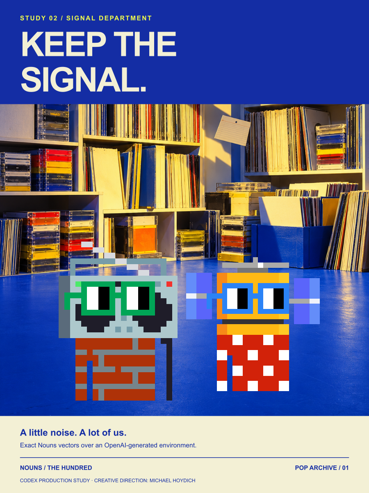
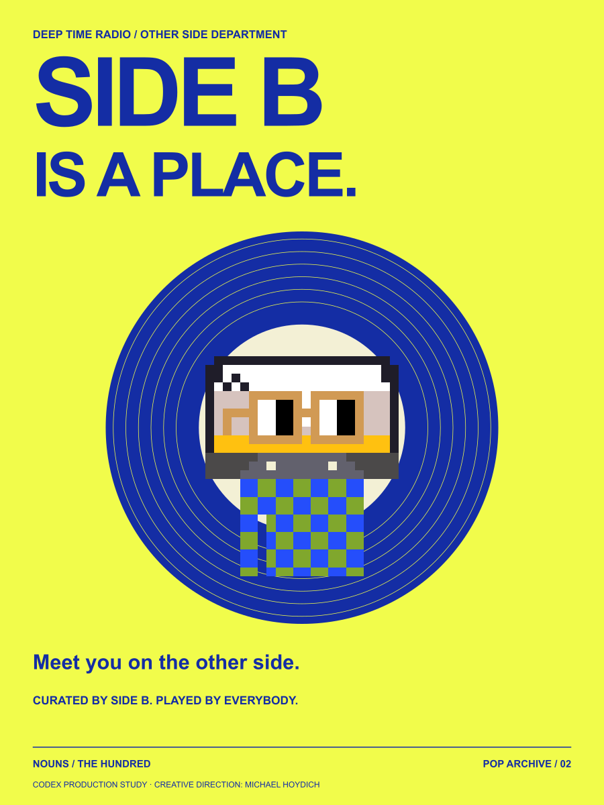
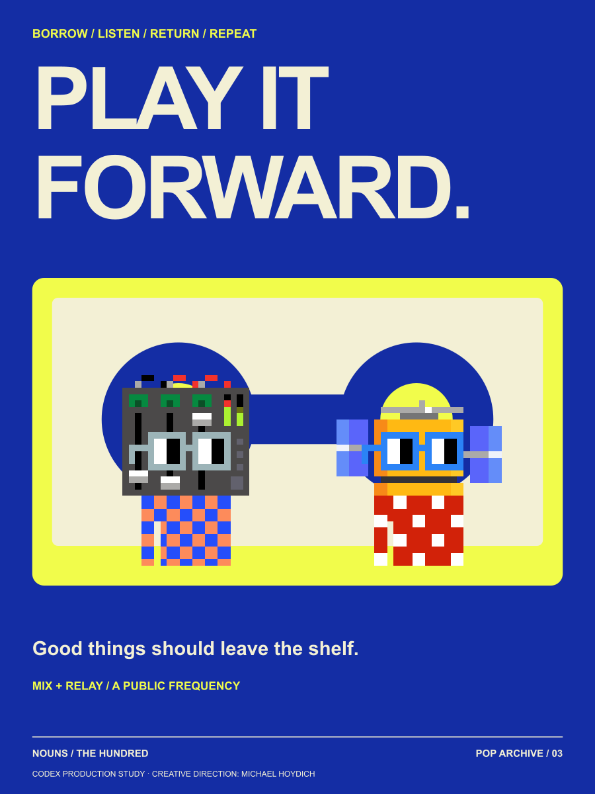
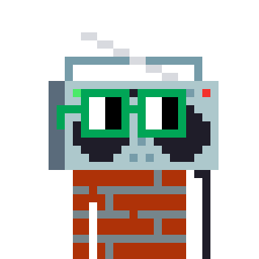
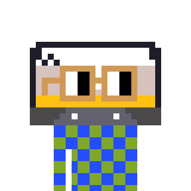
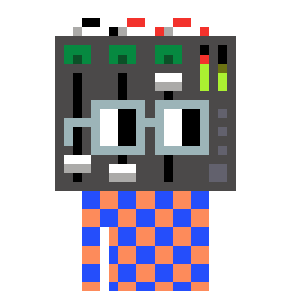

ARTWORK 01 / 03
Keep the Signal
A little noise. A lot of us.
Boom and Relay keep the archive open after closing time. The collection is useful only when someone takes it out.
Culture stays alive when somebody presses play.
In a community archive, every tape is a tiny public square. Boom broadcasts the lost frequencies. Side B files the songs you almost forgot. Mix makes room between genres. Relay passes the signal to whoever needs it next.

A little noise. A lot of us.
Boom and Relay keep the archive open after closing time. The collection is useful only when someone takes it out.

Meet you on the other side.
Side B invites the neighborhood past the familiar hit. A record label becomes an address.

Good things should leave the shelf.
Mix and Relay turn a cassette into a bridge. Lending, listening and returning become a shared rhythm.

LOCAL CHARACTER 021The station with no off switch for curiosity.
The station's portable party host can make a soundcheck into a celebration. Boom's most popular broadcast is a mixtape made entirely of neighborhood noises.

LOCAL CHARACTER 022Archivist of the overlooked second half.
A late-night selector who always flips the tape. Side B collects stories about songs that were never hits but still changed someone's life.

LOCAL CHARACTER 027Treats every genre as a neighbor.
A practical producer who keeps the studio kettle within reach. Mix thinks a good session ends with everybody wanting to come back.
Hands the microphone to the next person.
A rooftop signal watcher who thinks distance should make a story richer. Relay dreams of broadcasting a lullaby that arrives just as every listener needs it.
A nod to independent radio, mixtape sleeves, record-shop notices and fluorescent catalog systems. These are invented artifacts from an original neighborhood.
Concept, copy and graphic design: Codex.
Environment image: OpenAI built-in image generation.
Creative direction: Michael Hoydich.
Character geometry: original Nouns framework.
Editorial attribution only. Canonical Nouns art is CC0. These are new local combinations of original traits, not minted token identities or ownership claims. The vector posters retain exact original character geometry. PNGs are visual proofs; physical printing has not been tested.